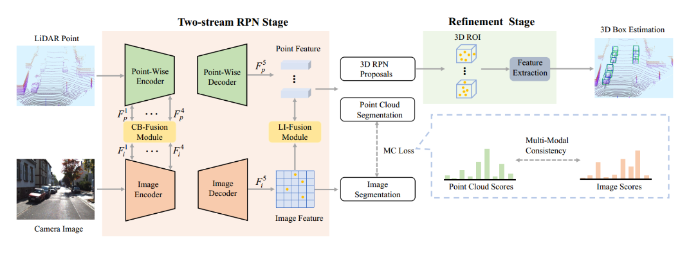

|
Zhe Liu I am a fourth-year Ph.D student at Huazhong University of Science and Technology (HUST), supervised by Prof. Xiang Bai. Currently, my research focuses on 3D Perception in Autonomous Driving: 3D object Detection, 3D multi-object Tracking, Multi-modal representation learning, 3D Point Cloud Analysis, etc. In the future, I will pay more attention to unified representation learning of multiple modalities, training a large 3D model by effectively unifying different autonomous datasets (e.g., nuScenes, KITTI, Waymo, ONCE, Argoverse), and Combination of 3D perception and large language Model for building 3D world model. Email / CV / Google Scholar / Github |
{kind=link}
NewsJul 2024: Two papers (SEED, OPEN) are accepted by ECCV 2024. Sep 2023: QTNet is accepted by NeurIPS 2023. Nov 2022: StereoDistill is accepted by AAAI 2023. Dec 2022: EPNet++ is accepted by T-PAMI 2022. Jul 2020: EPNet is accepted by ECCV 2020. Nov 2019: TANet is accepted by AAAI 2020 as an Oral presentation. |
Publications |
|
SEED: A Simple and Effective 3D DETR in Point Clouds
Zhe Liu*, Jinghua Hou*, Xiaoqing Ye, Tong Wang, Jingdong Wang, Xiang Bai ECCV, 2024 |
|
|
OPEN: Object-wise Position Embedding for Multi-view 3D Object Detection
Jinghua Hou, Tong Wang, Xiaoqing Ye, Zhe Liu, Shi Gong, Xiao Tan, Errui Ding, Jingdong Wang, Xiang Bai ECCV, 2024 |
|
|
Query-based Temporal Fusion with Explicit Motion for 3D Object Detection
Jinghua Hou*, Zhe Liu*, Dingkang Liang, Zhikang Zou, Xiaoqing Ye, Xiang Bai NeurIPS, 2023 paper / code |
|
|
A Simple Vision Transformer for Weakly Semi-supervised 3D Object Detection
Dingyuan Zhang*, Dingkang Liang*, Zhikang Zou*, Jingyu Li, Xiaoqing Ye, Zhe Liu, Xiao Tan, Xiang Bai ICCV, 2023 paper |
|

|
Multi-Modal 3D Object Detection by Box Matching
Zhe Liu, Xiaoqing Ye, Zhikang Zou, Xinwei He, Xiao Tan, Errui Ding, Jingdong Wang, Xiang Bai arXiv, 2023 paper / code |
|
DDS3D: Dense Pseudo-Labels with Dynamic Threshold for Semi-Supervised 3D Object Detection
Jingyu Li*, Zhe Liu*, Jinghua Hou, Dingkang Liang ICRA, 2023 paper / code |
|
|
StereoDistill: Pick the Cream from LiDAR for Distilling Stereo-based 3D Object Detection
Zhe Liu, Xiaoqing Ye, Xiao Tan, Errui Ding, Xiang Bai AAAI, 2023 paper |
|
|  |
EPNet++: Cascade Bi-directional Fusion for Multi-Modal 3D Object Detection
Zhe Liu, Tengteng Huang, Bingling Li, Xiwu Chen, Xi Wang, Xiang Bai T-PAMI, 2022 paper / code |
|
EPNet: Enhancing Point Features with Image Semantics for 3D Object Detection
Tengteng Huang*, Zhe Liu*, Xiwu Chen, Xiang Bai ECCV, 2020 paper / code |
|
|
TANet: Robust 3D Object Detection from Point Clouds with Triple Attention
Zhe Liu, Xin Zhao, Tengteng Huang, Ruolan Hu, Yu Zhou, Xiang Bai AAAI, 2020, Oral paper / code |
ActivitiesReviewer: CVPR, ICCV, ECCV, AAAI, NeurIPS, T-PAMI. |
|
Design and source code from Jon Barron's website |